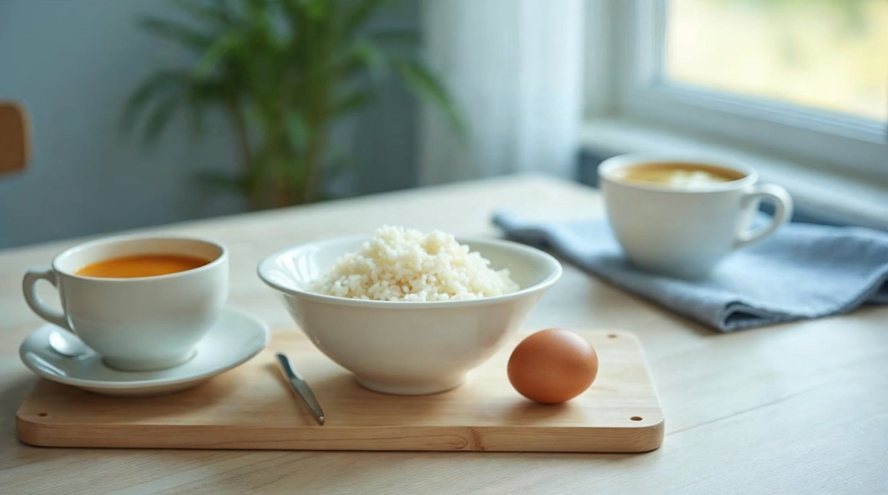
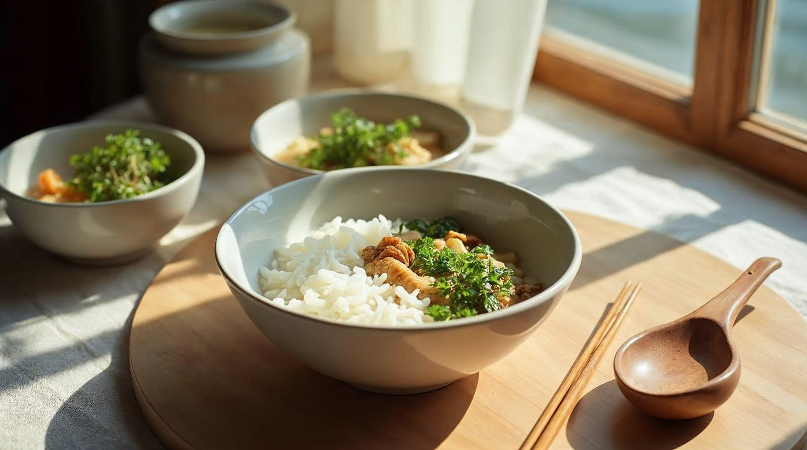
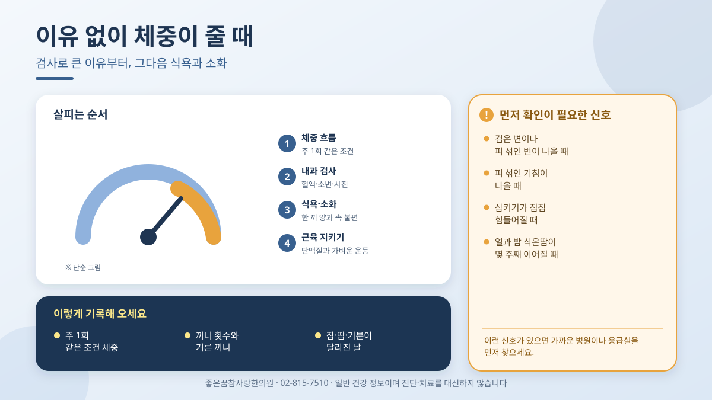

이종호 한의사 감수좋은꿈참사랑한의원 대표원장 (한의사 면허번호 19769)발행 2026-11-26 · 수정 2026-11-27
이 글의 차례
오랜만에 꺼낸 바지가 헐렁합니다. 처음에는 살이 빠졌나 싶어 내심 반가웠는데, 따로 운동을 하거나 덜 먹은 기억이 없습니다. 주변에서 얼굴이 핼쑥해졌다는 말을 몇 번 듣고 나서야 체중계에 올라가 보니 몇 달 사이 숫자가 꽤 줄어 있습니다.
이렇게 일부러 줄이지 않았는데 체중이 빠지는 것을 의도하지 않은 체중 감소라고 부릅니다. 대개 6개월에서 1년 사이에 원래 체중의 5퍼센트 넘게 줄었다면 한 번은 원인을 살펴보는 것이 좋다고 알려져 있습니다. 평소 60킬로그램이던 분이라면 3킬로그램 정도에 해당합니다.
체중이 빠지는 이유는 무척 다양합니다. 잠을 못 자고 마음이 지쳐서 입맛이 떨어진 경우도 있고, 소화가 불편해 자연스레 덜 먹게 된 경우도 있으며, 갑상선이나 혈당처럼 몸의 대사가 달라져서 생기는 경우도 있습니다. 드물지만 큰 병의 첫 신호일 때도 있습니다.
그래서 이 글에서는 먼저 병원에서 기본 검사를 받는 순서를 말씀드리고, 그 뒤 검사에서 큰 이상이 없을 때 식욕과 소화, 잠을 어떻게 함께 살피는지를 차근차근 정리해 보려 합니다.
의도하지 않은 체중 감소란 무엇인가요
체중은 하루에도 물과 음식, 대소변에 따라 1킬로그램 안팎으로 오르내립니다. 그래서 며칠 사이의 변화는 크게 걱정하지 않으셔도 됩니다. 문제는 몇 주에서 몇 달에 걸쳐 숫자가 한 방향으로 꾸준히 내려갈 때입니다.
이때 중요한 것은 일부러 줄였느냐입니다. 식단을 바꾸거나 운동을 시작했다면 체중이 주는 것이 자연스럽습니다. 그런 변화 없이 줄었다면 몸이 어딘가에서 에너지를 더 쓰고 있거나, 먹는 양이 모르는 사이 줄었거나, 먹어도 흡수가 덜 되고 있을 가능성을 생각해 봐야 합니다.
체중과 함께 옷 치수, 허리띠 구멍, 얼굴선 같은 변화도 단서가 됩니다. 체중계를 자주 쓰지 않는 분이라면 이런 변화가 먼저 눈에 띄는 경우가 많습니다.
왜 체중이 저절로 줄어들까요?
먹는 양이 줄어서 빠지는 경우가 가장 흔합니다. 스트레스나 우울감, 혼자 지내며 끼니를 거르는 생활, 씹기 불편한 치아, 속쓰림이나 더부룩함 같은 소화 불편이 이런 흐름을 만듭니다. 나도 모르게 한 끼 양이 반으로 줄어 있는 경우가 많습니다.
먹는 양은 그대로인데 빠지는 경우도 있습니다. 갑상선 호르몬이 많아지면 몸이 에너지를 빠르게 태우고, 혈당이 높으면 당이 소변으로 빠져나가며 체중이 줄 수 있습니다. 장에서 흡수가 잘 되지 않는 상태에서도 설사와 함께 체중이 줄어듭니다.
이 밖에도 만성 염증, 감염, 간이나 콩팥의 문제, 드물게 종양 같은 원인이 체중 감소로 먼저 나타나기도 합니다. 그래서 이유가 뚜렷하지 않은 체중 감소는 한 번은 내과에서 기본 검사를 받아 보는 것이 순서입니다.
내과에서 먼저 받아 보는 검사
내과에서는 보통 혈액 검사로 빈혈, 염증 수치, 혈당과 당화혈색소, 갑상선 기능, 간과 콩팥 수치 등을 살펴봅니다. 소변 검사와 흉부 사진을 함께 보는 경우도 많습니다. 어떤 검사를 할지는 증상과 나이, 검진 이력을 보고 담당 선생님이 정합니다.
최근 위내시경이나 대장내시경을 받은 지 오래되었다면 이 검사를 권받으실 수도 있습니다. 소화 불편이나 대변 변화가 함께 있다면 더욱 그렇습니다. 국가 건강검진이나 회사 검진 결과지가 있다면 진료 때 가져가시면 중복 검사를 줄일 수 있습니다.
검사에서 큰 이상이 없다는 말을 들으면 안심이 되면서도, 그럼 왜 빠지는 걸까 하는 궁금증이 남습니다. 이때부터 식욕과 소화, 잠, 마음의 흐름을 하나씩 나눠 살펴보는 일이 시작됩니다.

체중 감소와 헷갈리기 쉬운 변화
체중은 그대로인데 근육만 빠지는 경우도 있습니다. 움직임이 줄고 단백질을 적게 드시면 팔다리는 가늘어지고 배는 그대로인 모습이 됩니다. 체중계 숫자만 보면 놓치기 쉬워서 인바디처럼 근육량을 함께 보는 기록이 도움이 됩니다.
반대로 붓기가 빠지면서 체중이 줄어드는 경우도 있습니다. 짠 음식을 줄였거나 이뇨 작용이 있는 약을 새로 드시기 시작했다면 며칠 사이 체중이 빠질 수 있습니다. 이런 변화는 대개 몇 주 안에 멈춥니다.
마른 체질이라 원래 살이 잘 붙지 않는 분과, 원래 체중에서 줄어든 분은 다르게 봅니다. 평생 비슷한 체중을 유지해 오셨는데 최근 몇 달 사이 줄었다면, 마른 체질이라는 말로 넘기지 마시고 기록부터 시작해 보세요.
마음이 지치면 체중도 줄어듭니다
큰 일을 겪었거나, 오래 긴장한 상태로 지내거나, 마음이 가라앉은 시기에는 입맛이 먼저 떨어집니다. 배는 고픈데 막상 먹으려 하면 넘어가지 않고, 몇 숟가락 뜨고 나면 더부룩하다고 말씀하시는 분이 많습니다.
잠이 얕아지고 새벽에 자주 깨는 것, 아침이 유난히 힘든 것, 즐겁던 일이 시들해진 것이 함께 있다면 마음의 지침이 체중 감소의 큰 부분일 수 있습니다. 이런 경우 잠과 마음의 긴장을 함께 살피면 입맛과 체중도 따라 돌아오는 경우가 있습니다.
혼자 지내는 분이나 어르신은 끼니를 챙기는 것 자체가 귀찮아지면서 체중이 서서히 주는 경우도 있습니다. 누군가와 함께 먹는 끼니를 하루 한 번이라도 만들어 보는 것만으로도 먹는 양이 달라집니다.

어르신의 체중 감소는 더 세심하게
연세가 드시면 입맛이 줄고 씹고 삼키는 힘도 약해져 체중이 서서히 줄기 쉽습니다. 체중이 줄면서 근육까지 빠지면 걷기가 불안해지고 넘어질 위험도 커집니다. 그래서 어르신의 체중 감소는 숫자보다 기운과 걸음걸이를 함께 봅니다.
틀니가 맞지 않거나 잇몸이 아파 씹기 불편한 것은 아닌지, 드시는 약이 늘면서 입맛이 떨어진 것은 아닌지도 확인합니다. 치과와 처방한 병원에 함께 문의해 보시면 원인을 찾는 데 도움이 됩니다.
체중은 어떻게 재야 흐름이 보일까요?
체중 감소를 살필 때는 숫자 하나보다 흐름이 중요합니다. 일주일에 한 번, 같은 요일 아침에 화장실을 다녀온 뒤 가벼운 옷차림으로 재는 것을 권합니다. 같은 체중계를 쓰고, 바닥이 평평한 곳에 두는 것도 잊지 마세요.
매일 재면 오히려 작은 오르내림에 마음이 흔들립니다. 숫자는 수첩이나 휴대폰 메모에 날짜와 함께 적어 두시고, 한 달에 한 번 정도 펼쳐서 흐름을 보시면 됩니다. 줄어드는 속도가 빨라지는지, 멈췄는지가 한눈에 들어옵니다.
예전 체중이 기억나지 않는다면 건강검진 결과지를 찾아보세요. 해마다 적힌 체중을 나란히 놓으면 언제부터 줄기 시작했는지 짐작하는 데 도움이 됩니다.
생활이 바뀐 뒤 줄어든 체중
이직이나 이사, 교대 근무, 새로 시작한 운동처럼 생활이 크게 바뀐 뒤 체중이 줄었다면 그 변화 때문에 체중이 줄었을 수도 있습니다. 출퇴근 거리가 늘어 걷는 양이 많아졌거나, 점심을 대충 때우게 되었거나, 야근으로 저녁을 거르게 된 경우입니다.
이런 경우에도 몇 달째 계속 줄고 있다면 생활 탓으로만 넘기지 마시고 한 번은 확인해 보시는 것이 좋습니다. 생활의 변화와 몸의 변화가 동시에 일어나는 경우도 있기 때문입니다.
새 생활에 맞춰 끼니 시각을 다시 정해 보는 것도 도움이 됩니다. 출근 전 5분이라도 우유나 두유, 바나나처럼 간단한 것을 챙기고, 야근이 잦다면 저녁 대신 늦은 오후에 가벼운 간식을 한 번 넣어 보세요. 끼니가 비는 시간이 줄면 체중이 빠지는 속도도 함께 살펴볼 수 있습니다.
운동을 새로 시작하셨다면 운동량에 맞춰 먹는 양도 조금 늘려야 합니다. 운동 뒤에는 단백질이 든 간식을 챙기고, 체중이 계속 줄면 운동 강도를 조금 낮춰 보시길 권합니다.
체중이 줄어든 분들이 자주 헷갈리는 것
첫째, 살이 빠졌으니 건강해졌다는 생각입니다. 이유 없이 빠진 체중은 근육과 기운이 함께 줄어든 경우가 많아, 숫자만 보고 안심하기는 이릅니다.
둘째, 보약 한 첩이면 다시 찐다는 생각입니다. 원인을 확인하지 않고 먹는 것만 늘리면 중요한 신호를 놓칠 수 있습니다. 검사로 큰 이유를 먼저 확인하고, 그다음 식욕과 소화를 살피는 것이 순서입니다.
셋째, 입맛이 없으면 억지로라도 많이 먹어야 한다는 생각입니다. 억지로 먹으면 속이 더 불편해지고 식사가 부담스러워질 수 있습니다. 조금씩 자주, 편한 음식부터가 좋습니다.
먼저 이렇게 여쭙니다
처음 오시면 대략 이런 순서로 여쭙니다. 미리 생각해 오시면 이야기가 한결 수월해집니다.
- 언제부터, 몇 킬로그램 정도 줄었나요?
- 최근 내과 검사나 건강검진을 받으셨나요? 결과는 어떠셨나요?
- 한 끼 양과 끼니 횟수는 예전과 비교해 어떠신가요?
- 속쓰림, 더부룩함, 설사, 변비 같은 소화 불편이 있나요?
- 잠, 땀, 기분, 기운에 달라진 점이 있나요?
- 최근 새로 드시기 시작한 약이나 영양제가 있나요?
정확한 숫자가 기억나지 않으셔도 괜찮습니다. 예전 검진 결과지에 적힌 체중이나 사진 속 모습만으로도 흐름을 짐작할 수 있습니다.
일상에서 먼저 해 볼 수 있는 것
검사에서 큰 이상이 없다고 확인되었다면, 체중을 지키는 일은 먹는 양을 조금씩 되찾는 데서 시작합니다. 한꺼번에 많이 드시려 하기보다 작게, 자주 드시는 방식이 부담이 적습니다. 좋아하던 음식을 한 가지씩 다시 식탁에 올려 보는 것도 입맛을 깨우는 데 도움이 됩니다.
- 하루 세 끼에 간식 한두 번을 더해 조금씩 자주 먹기
- 끼니마다 달걀, 두부, 생선, 고기 같은 단백질 반찬 챙기기
- 입맛이 없을 때는 죽, 수프, 두유처럼 넘기기 쉬운 것부터
- 하루 한 끼는 누군가와 함께 먹기
- 가볍게 걷고 앉았다 일어서기로 근육 지키기
- 일주일에 한 번 같은 조건에서 체중 재기
식사 전에 물을 많이 마시면 배가 먼저 불러 덜 먹게 될 수 있으니, 물은 식사 사이에 나눠 드시는 편이 좋습니다. 국물에 밥을 말아 빨리 드시기보다 천천히 씹어 드시는 것이 소화에도 편합니다.
한의원에서 함께 살필 수 있는 경우
- 검사에서 큰 이상은 없다는데 입맛이 없고 한 끼 양이 줄어든 경우
- 조금만 먹어도 더부룩하고 속이 편하지 않은 경우
- 잠이 얕고 새벽에 자주 깨면서 기운이 떨어진 경우
- 큰 일이나 긴장을 겪은 뒤로 체중이 서서히 줄어든 경우
- 손발이 차고 쉽게 지치며 땀이 많아진 경우
좋은꿈참사랑한의원에서는 진찰을 마친 뒤 식욕과 소화, 잠, 기운의 흐름을 함께 보고 지금 상태에 맞는 방향을 정합니다. 침이나 온열 관리, 한약 상담 가운데 무엇이 맞는지는 진찰한 내용을 바탕으로 정합니다.
한약을 상의할 때는 드시는 약을 모두 확인하고 신중하게 정합니다. 처방받은 약은 상의 없이 멈추지 않으시고, 내과 정기 검사는 그대로 이어 가시도록 안내합니다. 진료 중에도 체중이 계속 줄면 내과에 다시 알리시는 것이 순서입니다.
이렇게 기록해 오시면 상담이 쉬워집니다
- 일주일에 한 번 같은 조건에서 잰 체중
- 끼니 횟수와 대략의 양, 거른 끼니
- 속 불편이나 대변 변화가 있었던 날
- 잠든 시각, 깬 시각, 밤에 깬 횟수
- 땀, 열감, 두근거림, 기분이 처진 날
몇 주만 적어 보셔도 체중이 멈췄는지, 여전히 줄고 있는지, 어떤 날 먹는 양이 줄었는지가 보입니다. 그 기록은 내과 선생님께도 저에게도 무척 쓸모 있는 정보가 됩니다.
숫자를 지키는 마음
체중이 줄면 몸도 마음도 함께 작아지는 느낌이 듭니다. 먼저 검사로 큰 이유를 확인하고, 그다음 한 숟가락씩 먹는 양을 되찾아 가는 것이 순서입니다. 서두르지 않아도 괜찮습니다.
이번 주에는 체중 기록 하나와 단백질 반찬 하나만 챙겨 보세요. 숫자가 멈추고 다시 조금씩 오르는 흐름을 진료실에서 함께 살피겠습니다. 가족이 함께 오셔서 요즘 드시는 모습을 말씀해 주셔도 큰 도움이 됩니다.
이런 증상은 먼저 확인이 필요합니다
- 체중 감소와 함께 검은 변이나 피가 섞인 변, 피가 섞인 기침이 있는 경우
- 삼키기가 점점 힘들어지거나 열과 밤 식은땀이 몇 주째 이어지는 경우
이런 신호가 있으면 한의원보다 가까운 병원이나 응급실을 먼저 찾으세요.
함께 읽으면 좋은 글
- 입맛이 없고 밥이 잘 넘어가지 않는 성인 식욕부진은 어떻게 살피나요?
- 아무리 먹어도 살이 붙지 않는 마른 체질, 체중을 늘리려면 무엇부터 살피나요?
- 갑상선 기능 저하나 항진이 있을 때 한의원 진료는 어떻게 함께 살피나요?
- 체중은 정상인데 인바디에서 근육량이 적게 나왔다면 무엇부터 살피나요?
- 소화가 오래 불편할 때 한의원에서는 무엇을 먼저 묻나요?

여쭙는 것
- 언제부터, 몇 킬로그램 정도 줄었나요?
- 최근 내과 검사나 건강검진을 받으셨나요? 결과는 어떠셨나요?
- 한 끼 양과 끼니 횟수는 예전과 비교해 어떠신가요?
생활에서 해 볼 것
- 하루 세 끼에 간식 한두 번을 더해 조금씩 자주 먹기
- 끼니마다 달걀, 두부, 생선, 고기 같은 단백질 반찬 챙기기
- 입맛이 없을 때는 죽, 수프, 두유처럼 넘기기 쉬운 것부터
한의원에서 함께 살필 것
- 검사에서 큰 이상은 없다는데 입맛이 없고 한 끼 양이 줄어든 경우
- 조금만 먹어도 더부룩하고 속이 편하지 않은 경우
- 잠이 얕고 새벽에 자주 깨면서 기운이 떨어진 경우
먼저 확인이 필요한 신호
- 체중 감소와 함께 검은 변이나 피가 섞인 변, 피가 섞인 기침이 있는 경우
- 삼키기가 점점 힘들어지거나 열과 밤 식은땀이 몇 주째 이어지는 경우
한눈에 보는 표
| 구분 | 핵심 |
|---|---|
| 여쭙는 것 | 언제부터, 몇 킬로그램 정도 줄었나요? 최근 내과 검사나 건강검진을 받으셨나요? 결과는 어떠셨나요? |
| 생활에서 해 볼 것 | 하루 세 끼에 간식 한두 번을 더해 조금씩 자주 먹기 끼니마다 달걀, 두부, 생선, 고기 같은 단백질 반찬 챙기기 |
| 한의원에서 함께 살필 것 | 검사에서 큰 이상은 없다는데 입맛이 없고 한 끼 양이 줄어든 경우 조금만 먹어도 더부룩하고 속이 편하지 않은 경우 |
| 먼저 확인이 필요한 신호 | 체중 감소와 함께 검은 변이나 피가 섞인 변, 피가 섞인 기침이 있는 경우 삼키기가 점점 힘들어지거나 열과 밤 식은땀이 몇 주째 이어지는 경우 |
자주 묻는 질문
몇 킬로그램이 빠지면 검사를 받아 보는 게 좋을까요?
일부러 줄이지 않았는데 6개월에서 1년 사이 원래 체중의 5퍼센트 넘게 줄었다면 한 번은 내과에서 기본 검사를 받아 보시길 권합니다. 숫자가 그보다 작아도 걱정되는 증상이 함께 있다면 일찍 상의하세요.
검사에서 이상이 없다는데 한의원에서는 무엇을 보나요?
식욕과 한 끼 양, 소화와 대변, 잠, 기운과 마음의 흐름을 함께 봅니다. 진찰한 내용을 바탕으로 생활에서 바꿔 볼 것과 진료 방향을 정합니다.
살을 찌우려면 많이 먹으면 되나요?
한꺼번에 많이 드시면 오히려 속이 불편해 다음 끼니를 거르기 쉽습니다. 조금씩 자주, 단백질 반찬을 챙기며 드시고, 가벼운 근력 운동으로 근육을 함께 지키는 편이 좋습니다.
한약을 먹으면 입맛이 돌아오나요?
결과를 미리 약속드리기는 어렵습니다. 진찰 뒤 소화와 잠, 기운 상태를 보고 상의하며, 드시는 약을 모두 확인하고 신중하게 정합니다.
좋은꿈참사랑한의원은 재진 때 지난번 이야기부터 이어서 여쭙니다. 진료시간과 예약은 오시는 길에서 확인하세요.
어디서 상담받을 수 있나요?
좋은꿈참사랑한의원은 서울 동작구 만양로2길 2 신성빌딩 3층·5층(서울 동작구 상도동, 7호선 상도역 3번 출구 근처)에 있습니다. 한의사 3명(이종호 대표원장, 조영기 수석진료원장, 정원영 진료원장)이 진료합니다. 진료시간은 평일 09:30~20:00(점심 13:00~14:00), 토·일·공휴일 09:30~15:00이며, 방문 전 전화로 확인을 권합니다. 예약은 네이버 예약, 카카오톡 상담, 전화 02-815-7510로 받습니다.
이 글은 일반적인 건강 정보이며 개인의 진단이나 치료를 대신하지 않습니다. 증상이 있거나 복용 중인 약이 있다면 진료를 통해 확인하세요. 치료 효과는 개인마다 다를 수 있습니다.
작성 기준: 일반적으로 알려져 있는 건강 정보를 참고해 정리했습니다(대표원장 감수). 증상 기록은 1~2주 동안 하루 1회, 비슷한 시간에 적어 오시면 지난 상태와 비교하기 쉽습니다.